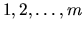
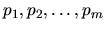
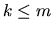
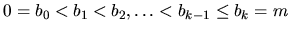
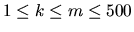
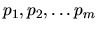

| Copying Books |
Before the invention of book-printing, it was very hard to make a copy of a book. All the contents had to be re-written by hand by so called scribers. The scriber had been given a book and after several months he finished its copy. One of the most famous scribers lived in the 15th century and his name was Xaverius Endricus Remius Ontius Xendrianus (Xerox). Anyway, the work was very annoying and boring. And the only way to speed it up was to hire more scribers.
Once upon a time, there was a theater ensemble that wanted to play famous
Antique Tragedies. The scripts of these plays were divided into many books
and actors needed more copies of them, of course. So they hired many scribers
to make copies of these books. Imagine you have m books (numbered
)
that may have different number of pages
(
)
and you want to
make one copy of each of them. Your task is to divide these books among
k scribes, .
Each book can be assigned to a single scriber only, and every scriber
must get a continuous sequence of books. That means, there exists
an increasing succession of numbers

such that i-th scriber gets a sequence
of books with numbers between bi-1+1 and bi.
The time needed to make a copy of all the books is determined by the scriber
who was assigned the most work. Therefore, our goal is to minimize the
maximum number of pages assigned to a single scriber. Your task is to find
the optimal assignment.
The input consists of N cases. The first line of the input contains only positive integer N. Then follow the cases. Each case consists of exactly two lines. At the first line, there are two integers m and k, . At the second line, there are integers  separated by spaces. All these values are positive and less than 10000000.
For each case, print exactly one line. The line must contain the input succession divided into exactly k parts such that the maximum sum of a single part should be as small as possible. Use the slash character (`/') to separate the parts. There must be exactly one space character between any two successive numbers and between the number and the slash.
If there is more than one solution, print the one that minimizes the work
assigned to the first scriber, then to the second scriber etc. But each
scriber must be assigned at least one book.
2 9 3 100 200 300 400 500 600 700 800 900 5 4 100 100 100 100 100
100 200 300 400 500 / 600 700 / 800 900 100 / 100 / 100 / 100 100